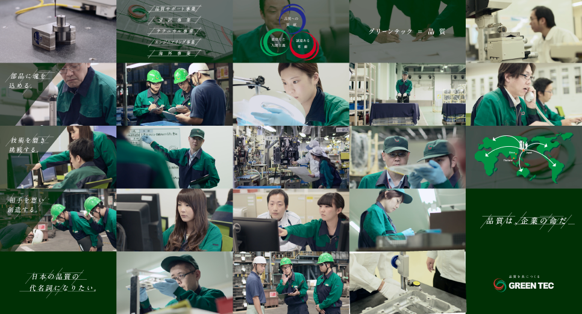

当社は創業以来、「品質」に特化した事業で成長をしてきました。 グリーンテック＝品質というブランドを確立し、いずれは日本の品質の代名詞となっていけるような存在を目指していきたいと考えています。
創設 平成8年10月
社長 中島康雄
資本金 ５０００万円
社員数 3266人（2019年4月1日）
グリーンテックには、資格制度があります。画像をクリックすると内容があるんので参照してください。
採用情報
〒460-0003
愛知県名古屋市中区錦2-4‐15 ＯＲＥ錦二丁目ビル 5F
TEL：052-221-0230 FAX：052-221-0200